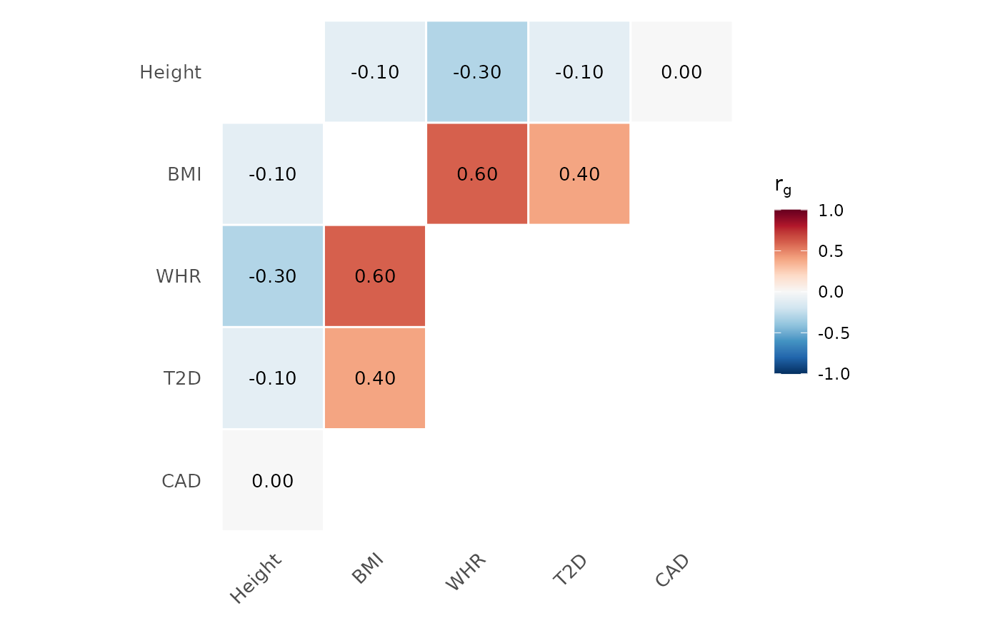

Heatmap of genetic correlations (rg) between traits, typically from LD Score Regression (LDSC). Includes significance indicators and hierarchical clustering of traits.
Usage
genetic_correlation(
rg_matrix,
p_matrix = NULL,
sig_threshold = 0.05,
sig_marker = "*",
palette = "RdBu",
cluster = TRUE,
rg_range = c(-1, 1),
cell_size = 3.5,
show_values = TRUE,
show_diagonal = FALSE,
title = NULL
)Arguments
- rg_matrix
A symmetric matrix of genetic correlations, or a data.frame with columns: trait1, trait2, rg, se, p.
- p_matrix
Optional matrix of p-values (same dimensions as rg_matrix). If
rg_matrixis a data.frame with apcolumn, this is extracted automatically.- sig_threshold
P-value threshold for significance markers.
- sig_marker
Character to mark significant correlations.
- palette
Color palette: "RdBu" (default), "PRGn", "PiYG", or a vector of colors.
- cluster
If TRUE, reorder traits by hierarchical clustering.
- rg_range
Range for the color scale (default c(-1, 1)).
- cell_size
Size of the text inside cells.
- show_values
Show rg values inside cells.
- show_diagonal
Show the diagonal (always 1.0).
- title
Plot title.
Examples
# Simulated genetic correlation matrix
traits <- c("BMI", "Height", "WHR", "T2D", "CAD")
rg <- matrix(c(
1.0, -0.1, 0.6, 0.4, 0.2,
-0.1, 1.0, -0.3, -0.1, 0.0,
0.6, -0.3, 1.0, 0.3, 0.15,
0.4, -0.1, 0.3, 1.0, 0.5,
0.2, 0.0, 0.15, 0.5, 1.0
), nrow = 5, dimnames = list(traits, traits))
genetic_correlation(rg)
